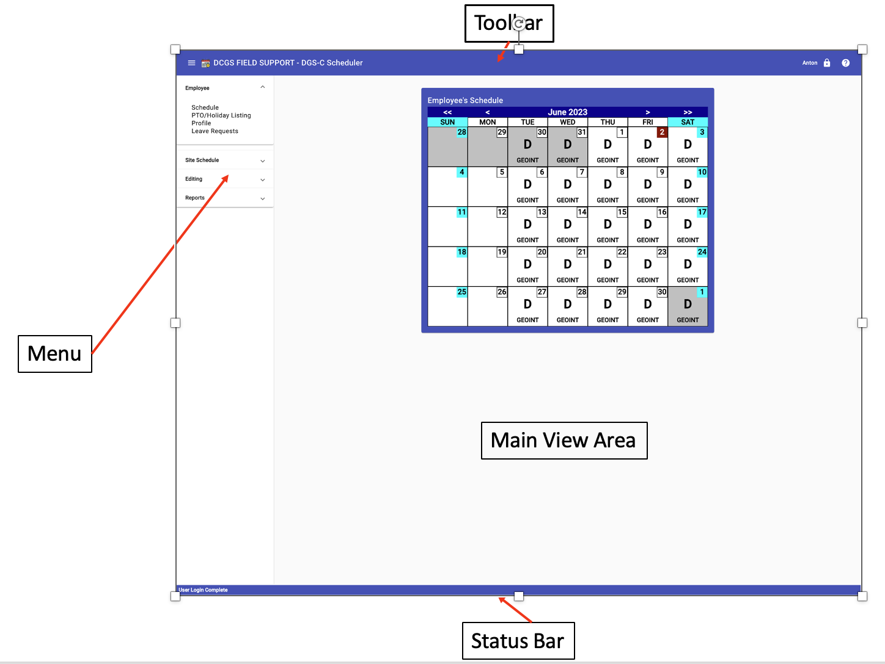

View Layout

- Top/Toolbar - At the top of the window/browser is the toolbar.
It provides the place to make the menu visible/hidden, shows the Team
Name and Site Name the logged individual is assigned to. The other end
of the toolbar shows the logged individual’s first name, the Icon to be
used to log out, plus a button to access the on-line help
- Menu - The menu provides the access to the various view and
editing options the logged in user’s permissions allow.
- Main View Area - The area where the user's selected choice is
displayed.
- Bottom/Status Bar - The blue area at the bottom will display
error messages and/or other status messages from the server.
Scheduler Overview
Logging In and Out